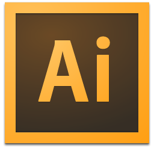

Tools
 Photoshop
Photoshop-  Illustrator
 HTML5
HTML5 CSS3
CSS3 Sublime
Sublime GitHub
GitHub SourceTree
SourceTree Compass
Compass
Providence, RI 2012 - 2014
Startup Accelorator and Code Experience
I Founded and Built ShutterCal from the ground up with my Partner and CTO. It began as an experiment in web UX, and a study in restricting the user to one positive action but after steady growth of the community and demand for product, we decided to bring it through a startup accelorator.
I Co-Founded and Built ShutterCal with my Partner and CTO. And I just keep on typing here until it's long. I Co-Founded and Built ShutterCal with my Partner and CTO. And I just keep on typing here until it's long. I Co-Founded and Built ShutterCal.
Remember 2008?
fill in